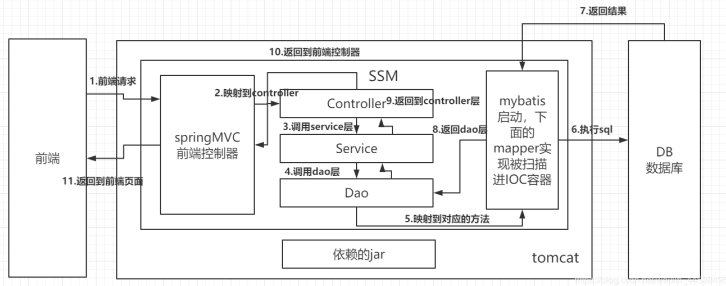
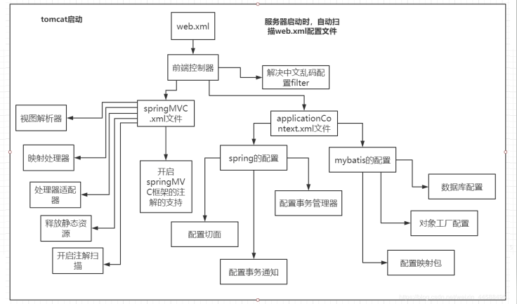
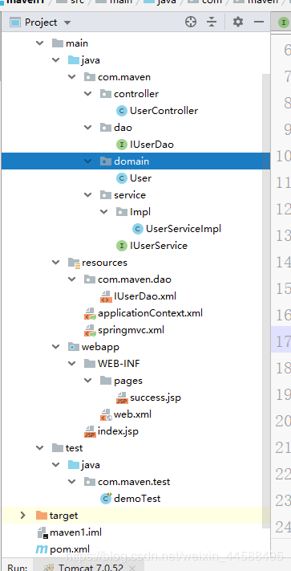

<!DOCTYPE html>
<html>
<head><meta name="generator" content="Hexo 3.9.0">
  <meta charset="utf-8">
  
  <!-- Java：三大框架整合搭建SSM框架 | Zesystem&#39;blog -->
  <title>Zesystem's  Space</title>
  <meta name="viewport" content="width=device-width, initial-scale=1, maximum-scale=1">
  <meta name="keywords" content="This is Zesystem's blog.">
  <!-- 
  
    <meta name="keywords" content="MinHow,MinHow's Blog" />
    -->
  <meta name="description" content="SSM框架整合了springMVC、spring、Mybatis三大框架。">
<meta name="keywords" content="springMVC,Mybatis,spring,SSM框架搭建">
<meta property="og:type" content="article">
<meta property="og:title" content="Java：三大框架整合搭建SSM框架">
<meta property="og:url" content="https://zesystem.github.io/2019/08/08/Java：三大框架整合搭建SSM框架/index.html">
<meta property="og:site_name" content="Zesystem&#39;blog">
<meta property="og:description" content="SSM框架整合了springMVC、spring、Mybatis三大框架。">
<meta property="og:locale" content="default">
<meta property="og:image" content="https://zesystem.github.io/2019/08/08/Java：三大框架整合搭建SSM框架/20190807174631768.png">
<meta property="og:image" content="https://zesystem.github.io/2019/08/08/Java：三大框架整合搭建SSM框架/20190808110508409.png">
<meta property="og:image" content="https://zesystem.github.io/2019/08/08/Java：三大框架整合搭建SSM框架/20190808111650765.png">
<meta property="og:updated_time" content="2019-08-08T04:35:59.025Z">
<meta name="twitter:card" content="summary">
<meta name="twitter:title" content="Java：三大框架整合搭建SSM框架">
<meta name="twitter:description" content="SSM框架整合了springMVC、spring、Mybatis三大框架。">
<meta name="twitter:image" content="https://zesystem.github.io/2019/08/08/Java：三大框架整合搭建SSM框架/20190807174631768.png">
  
  
    <link rel="icon" href="/favicon.ico">
  
  <link href="//cdn.bootcss.com/font-awesome/4.7.0/css/font-awesome.min.css" rel="stylesheet" type="text/css">
  <link rel="stylesheet" href="/css/style.css">
  <script src="/js/pace.min.js"></script>
  

  
	<script>
	var _hmt = _hmt || [];
	(function() {
	  var hm = document.createElement("script");
	  hm.src = "//hm.baidu.com/hm.js?true";
	  var s = document.getElementsByTagName("script")[0]; 
	  s.parentNode.insertBefore(hm, s);
	})();
	</script>

  
  <div style="display: none;">
    <script src="//s22.cnzz.com/z_stat.php?id=true&web_id=true" language="JavaScript"></script>
  </div>


</head>
</html>
<body>
  <div id="container">
      <header id="header">
    <div id="banner"></div>
    <div id="header-outer">
        <div id="header-menu" class="header-menu-pos animated">
            <div class="header-menu-container">
                <a href="/" class="left">
                    <span class="site-title">Zesystem</span>
                </a>
                <nav id="header-menu-nav" class="right">
                    
                    <a  href="/">
                        <i class="fa fa-home"></i>
                        <span>我的家</span>
                    </a>
                    
                    <a  href="/archives">
                        <i class="fa fa-archive"></i>
                        <span>干货s</span>
                    </a>
                    
                    <a  href="/about">
                        <i class="fa fa-user"></i>
                        <span>关于me</span>
                    </a>
                    
                </nav>
                <a class="mobile-header-menu-button">
                    <i class="fa fa-bars"></i>
                </a>
            </div>
        </div>
        <div id="header-row">
            <div id="logo">
                <a href="/">
                    
                </a>
            </div>
            <div class="header-info">
                <div id="header-title">
                    
                    <h2>
                        Zesystem
                    </h2>
                    
                </div>
                <div id="header-description">
                    
                    <h3>
                        不平凡的人生需要走不平凡的路
                    </h3>
                    
                </div>
            </div>
            <nav class="header-nav">
                <div class="social">
                    
                        <a title="CSDN" target="_blank" href="https://blog.csdn.net/weixin_44588495">
                            <i class="fa fa-home fa-2x"></i></a>
                    
                        <a title="Github" target="_blank" href="https://github.com/Zesystem">
                            <i class="fa fa-github fa-2x"></i></a>
                    
                        <a title="2502266520"  ">
                            <i class="fa fa-qq fa-2x"></i></a>
                    
                </div>
            </nav>
        </div>
    </div>
</header>
      <div class="outer">
        <section id="main" class="body-wrap"><article id="post-Java：三大框架整合搭建SSM框架" class="article article-type-post" itemscope itemprop="blogPost">
  <div class="article-inner">
    
      <header class="article-header">
        
  
    <h1 class="post-title" itemprop="name">
      Java：三大框架整合搭建SSM框架
    </h1>
    <div class="post-title-bar">
      <ul>
          
              <li>
                  <i class="fa fa-book"></i>
                  
                      <a href="/categories/SSM/">SSM</a>
                  
              </li>
          
        <li>
          <i class="fa fa-calendar"></i>  2019-08-08
        </li>
        <li>
          <i class="fa fa-eye"></i>
          <span id="busuanzi_value_page_pv"></span>
        </li>
      </ul>
    </div>
  

          
      </header>
    
    <div class="article-entry post-content" itemprop="articleBody">
      
            
            <p>SSM框架整合了springMVC、spring、Mybatis三大框架。</p>
<a id="more"></a>
<h3 id="1、SSM原理图"><a href="#1、SSM原理图" class="headerlink" title="1、SSM原理图"></a>1、SSM原理图</h3><p></p>
<ul>
<li><p>首先前端页面发送请求，然后通过前端控制器找到对应的Controller，Controller调用Service的方法，Service调用Dao层的方法，Dao方法对数据库操作，将查询的值返回到Controller进行处理。最后响应页面。</p>
</li>
<li><p>Controller、Service、Dao分别对应springMVC、spring、mybatis框架。这也是MVC三层模型的基本思想。</p>
</li>
<li><p>分别用spring去整合mybatis和springMVC。</p>
<h3 id="2、SSM各文件的关系"><a href="#2、SSM各文件的关系" class="headerlink" title="2、SSM各文件的关系"></a>2、SSM各文件的关系</h3><p></p>
</li>
<li><p>由于这里的配置比较多，所以大家要明确这里的配置文件之间的关系。下面就一个一个来说如何配置。下面的配置可以结合这个图来看。</p>
<h3 id="3、各配置文件"><a href="#3、各配置文件" class="headerlink" title="3、各配置文件"></a>3、各配置文件</h3><h4 id="web-xml文件"><a href="#web-xml文件" class="headerlink" title="web.xml文件"></a>web.xml文件</h4><figure class="highlight xml"><table><tr><td class="gutter"><pre><span class="line">1</span><br><span class="line">2</span><br><span class="line">3</span><br><span class="line">4</span><br><span class="line">5</span><br><span class="line">6</span><br><span class="line">7</span><br><span class="line">8</span><br><span class="line">9</span><br><span class="line">10</span><br><span class="line">11</span><br><span class="line">12</span><br><span class="line">13</span><br><span class="line">14</span><br><span class="line">15</span><br><span class="line">16</span><br><span class="line">17</span><br><span class="line">18</span><br><span class="line">19</span><br><span class="line">20</span><br><span class="line">21</span><br><span class="line">22</span><br><span class="line">23</span><br><span class="line">24</span><br><span class="line">25</span><br><span class="line">26</span><br><span class="line">27</span><br><span class="line">28</span><br><span class="line">29</span><br><span class="line">30</span><br><span class="line">31</span><br><span class="line">32</span><br><span class="line">33</span><br><span class="line">34</span><br><span class="line">35</span><br><span class="line">36</span><br><span class="line">37</span><br><span class="line">38</span><br><span class="line">39</span><br><span class="line">40</span><br><span class="line">41</span><br><span class="line">42</span><br><span class="line">43</span><br><span class="line">44</span><br><span class="line">45</span><br><span class="line">46</span><br></pre></td><td class="code"><pre><span class="line"><span class="meta">&lt;!DOCTYPE web-app PUBLIC</span></span><br><span class="line"><span class="meta"> "-//Sun Microsystems, Inc.//DTD Web Application 2.3//EN"</span></span><br><span class="line"><span class="meta"> "http://java.sun.com/dtd/web-app_2_3.dtd" &gt;</span></span><br><span class="line"></span><br><span class="line"><span class="tag">&lt;<span class="name">web-app</span> <span class="attr">xmlns</span>=<span class="string">"http://java.sun.com/xml/ns/javaee"</span></span></span><br><span class="line"><span class="tag">         <span class="attr">xmlns:xsi</span>=<span class="string">"http://www.w3.org/2001/XMLSchema-instance"</span></span></span><br><span class="line"><span class="tag">         <span class="attr">xsi:schemaLocation</span>=<span class="string">"http://java.sun.com/xml/ns/javaee</span></span></span><br><span class="line"><span class="tag"><span class="string">        http://java.sun.com/xml/ns/javaee/web-app_3_0.xsd"</span></span></span><br><span class="line"><span class="tag">         <span class="attr">version</span>=<span class="string">"3.0"</span>&gt;</span></span><br><span class="line">    <span class="tag">&lt;<span class="name">display-name</span>&gt;</span>Archetype Created Web Application<span class="tag">&lt;/<span class="name">display-name</span>&gt;</span></span><br><span class="line">    <span class="tag">&lt;<span class="name">servlet</span>&gt;</span></span><br><span class="line">        <span class="tag">&lt;<span class="name">servlet-name</span>&gt;</span>dispatcherServlet<span class="tag">&lt;/<span class="name">servlet-name</span>&gt;</span></span><br><span class="line">        <span class="tag">&lt;<span class="name">servlet-class</span>&gt;</span>org.springframework.web.servlet.DispatcherServlet<span class="tag">&lt;/<span class="name">servlet-class</span>&gt;</span></span><br><span class="line">        <span class="comment">&lt;!--      加载springMVC.xml文件--&gt;</span></span><br><span class="line">        <span class="tag">&lt;<span class="name">init-param</span>&gt;</span></span><br><span class="line">            <span class="tag">&lt;<span class="name">param-name</span>&gt;</span>contextConfigLocation<span class="tag">&lt;/<span class="name">param-name</span>&gt;</span></span><br><span class="line">            <span class="tag">&lt;<span class="name">param-value</span>&gt;</span></span><br><span class="line">                classpath:springmvc.xml</span><br><span class="line">                classpath:applicationContext.xml</span><br><span class="line">            <span class="tag">&lt;/<span class="name">param-value</span>&gt;</span></span><br><span class="line">        <span class="tag">&lt;/<span class="name">init-param</span>&gt;</span></span><br><span class="line">        <span class="comment">&lt;!--  启动服务器--&gt;</span></span><br><span class="line">        <span class="tag">&lt;<span class="name">load-on-startup</span>&gt;</span>1<span class="tag">&lt;/<span class="name">load-on-startup</span>&gt;</span></span><br><span class="line">    <span class="tag">&lt;/<span class="name">servlet</span>&gt;</span></span><br><span class="line">    <span class="tag">&lt;<span class="name">servlet-mapping</span>&gt;</span></span><br><span class="line">        <span class="tag">&lt;<span class="name">servlet-name</span>&gt;</span>dispatcherServlet<span class="tag">&lt;/<span class="name">servlet-name</span>&gt;</span></span><br><span class="line">        <span class="tag">&lt;<span class="name">url-pattern</span>&gt;</span>/<span class="tag">&lt;/<span class="name">url-pattern</span>&gt;</span></span><br><span class="line">    <span class="tag">&lt;/<span class="name">servlet-mapping</span>&gt;</span></span><br><span class="line">    <span class="comment">&lt;!--    解决中文乱码的过滤器--&gt;</span></span><br><span class="line">    <span class="tag">&lt;<span class="name">filter</span>&gt;</span></span><br><span class="line">        <span class="tag">&lt;<span class="name">filter-name</span>&gt;</span>characterEncodingFilter<span class="tag">&lt;/<span class="name">filter-name</span>&gt;</span></span><br><span class="line">        <span class="tag">&lt;<span class="name">filter-class</span>&gt;</span>org.springframework.web.filter.CharacterEncodingFilter<span class="tag">&lt;/<span class="name">filter-class</span>&gt;</span></span><br><span class="line">        <span class="tag">&lt;<span class="name">init-param</span>&gt;</span></span><br><span class="line">            <span class="tag">&lt;<span class="name">param-name</span>&gt;</span>encoding<span class="tag">&lt;/<span class="name">param-name</span>&gt;</span></span><br><span class="line">            <span class="tag">&lt;<span class="name">param-value</span>&gt;</span>UTF-8<span class="tag">&lt;/<span class="name">param-value</span>&gt;</span></span><br><span class="line">        <span class="tag">&lt;/<span class="name">init-param</span>&gt;</span></span><br><span class="line">        <span class="tag">&lt;<span class="name">init-param</span>&gt;</span></span><br><span class="line">            <span class="tag">&lt;<span class="name">param-name</span>&gt;</span>forceEncoding<span class="tag">&lt;/<span class="name">param-name</span>&gt;</span></span><br><span class="line">            <span class="tag">&lt;<span class="name">param-value</span>&gt;</span>true<span class="tag">&lt;/<span class="name">param-value</span>&gt;</span></span><br><span class="line">        <span class="tag">&lt;/<span class="name">init-param</span>&gt;</span></span><br><span class="line">    <span class="tag">&lt;/<span class="name">filter</span>&gt;</span></span><br><span class="line">    <span class="tag">&lt;<span class="name">filter-mapping</span>&gt;</span></span><br><span class="line">        <span class="tag">&lt;<span class="name">filter-name</span>&gt;</span>characterEncodingFilter<span class="tag">&lt;/<span class="name">filter-name</span>&gt;</span></span><br><span class="line">        <span class="tag">&lt;<span class="name">url-pattern</span>&gt;</span>/*<span class="tag">&lt;/<span class="name">url-pattern</span>&gt;</span></span><br><span class="line">    <span class="tag">&lt;/<span class="name">filter-mapping</span>&gt;</span></span><br><span class="line"><span class="tag">&lt;/<span class="name">web-app</span>&gt;</span></span><br></pre></td></tr></table></figure>
</li>
<li><p>这里的web.xml文件时tomcat启动时，就加载的文件。一切的请求都由前端控制器支配，初始化时，加载springMVC.xml和applicationContext.xml文件。这里还有一个编码的配置器。</p>
<h4 id="springMVC-xml文件"><a href="#springMVC-xml文件" class="headerlink" title="springMVC.xml文件"></a>springMVC.xml文件</h4><figure class="highlight xml"><table><tr><td class="gutter"><pre><span class="line">1</span><br><span class="line">2</span><br><span class="line">3</span><br><span class="line">4</span><br><span class="line">5</span><br><span class="line">6</span><br><span class="line">7</span><br><span class="line">8</span><br><span class="line">9</span><br><span class="line">10</span><br><span class="line">11</span><br><span class="line">12</span><br><span class="line">13</span><br><span class="line">14</span><br><span class="line">15</span><br><span class="line">16</span><br><span class="line">17</span><br><span class="line">18</span><br><span class="line">19</span><br><span class="line">20</span><br><span class="line">21</span><br><span class="line">22</span><br><span class="line">23</span><br><span class="line">24</span><br><span class="line">25</span><br><span class="line">26</span><br><span class="line">27</span><br><span class="line">28</span><br></pre></td><td class="code"><pre><span class="line"><span class="meta">&lt;?xml version="1.0" encoding="UTF-8"?&gt;</span></span><br><span class="line"><span class="tag">&lt;<span class="name">beans</span> <span class="attr">xmlns</span>=<span class="string">"http://www.springframework.org/schema/beans"</span></span></span><br><span class="line"><span class="tag">       <span class="attr">xmlns:mvc</span>=<span class="string">"http://www.springframework.org/schema/mvc"</span></span></span><br><span class="line"><span class="tag">       <span class="attr">xmlns:context</span>=<span class="string">"http://www.springframework.org/schema/context"</span></span></span><br><span class="line"><span class="tag">       <span class="attr">xmlns:xsi</span>=<span class="string">"http://www.w3.org/2001/XMLSchema-instance"</span></span></span><br><span class="line"><span class="tag">       <span class="attr">xsi:schemaLocation</span>=<span class="string">"</span></span></span><br><span class="line"><span class="tag"><span class="string">             http://www.springframework.org/schema/beans</span></span></span><br><span class="line"><span class="tag"><span class="string">             http://www.springframework.org/schema/beans/spring-beans.xsd</span></span></span><br><span class="line"><span class="tag"><span class="string">             http://www.springframework.org/schema/mvc</span></span></span><br><span class="line"><span class="tag"><span class="string">             http://www.springframework.org/schema/mvc/spring-mvc.xsd</span></span></span><br><span class="line"><span class="tag"><span class="string">             http://www.springframework.org/schema/context</span></span></span><br><span class="line"><span class="tag"><span class="string">             http://www.springframework.org/schema/context/spring-context.xsd</span></span></span><br><span class="line"><span class="tag"><span class="string">        "</span>&gt;</span></span><br><span class="line">    <span class="comment">&lt;!--    开启注解扫描--&gt;</span></span><br><span class="line">    <span class="tag">&lt;<span class="name">context:component-scan</span> <span class="attr">base-package</span>=<span class="string">"com.maven.controller"</span>/&gt;</span></span><br><span class="line"></span><br><span class="line">    <span class="comment">&lt;!--    开启springMVC框架的注解的支持--&gt;</span></span><br><span class="line">    <span class="tag">&lt;<span class="name">mvc:annotation-driven</span>/&gt;</span></span><br><span class="line"></span><br><span class="line">    <span class="tag">&lt;<span class="name">bean</span> <span class="attr">id</span>=<span class="string">"internalResourceViewResolver"</span> <span class="attr">class</span>=<span class="string">"org.springframework.web.servlet.view.InternalResourceViewResolver"</span>&gt;</span></span><br><span class="line">        <span class="tag">&lt;<span class="name">property</span> <span class="attr">name</span>=<span class="string">"prefix"</span> <span class="attr">value</span>=<span class="string">"/WEB-INF/pages/"</span>&gt;</span><span class="tag">&lt;/<span class="name">property</span>&gt;</span></span><br><span class="line">        <span class="tag">&lt;<span class="name">property</span> <span class="attr">name</span>=<span class="string">"suffix"</span> <span class="attr">value</span>=<span class="string">".jsp"</span>&gt;</span><span class="tag">&lt;/<span class="name">property</span>&gt;</span></span><br><span class="line">    <span class="tag">&lt;/<span class="name">bean</span>&gt;</span></span><br><span class="line">    <span class="tag">&lt;<span class="name">bean</span> <span class="attr">class</span>=<span class="string">"org.springframework.web.servlet.mvc.method.annotation.RequestMappingHandlerMapping"</span> /&gt;</span></span><br><span class="line">    <span class="tag">&lt;<span class="name">bean</span> <span class="attr">class</span>=<span class="string">"org.springframework.web.servlet.mvc.method.annotation.RequestMappingHandlerAdapter"</span>/&gt;</span></span><br><span class="line"><span class="comment">&lt;!--    释放静态资源--&gt;</span></span><br><span class="line">    <span class="tag">&lt;<span class="name">mvc:default-servlet-handler</span>/&gt;</span></span><br><span class="line"><span class="tag">&lt;/<span class="name">beans</span>&gt;</span></span><br></pre></td></tr></table></figure>
</li>
<li><p>注解扫描需要用base-package指定我们要扫描的包路径，一般指向controller。</p>
</li>
<li><p>开启springMVC框架的注解的支持，是固定写法。</p>
</li>
<li><p>internalResourceViewResolver视图解析器，两个property配置的是文件的路径以及后缀名。</p>
</li>
<li><p>映射处理器和处理器适配器一般直接加上就可以了。</p>
</li>
<li><p>释放静态资源，可以这样写，当然还有另一种写法&lt;mvc:resource..。指定对应的静态资源。html、css、js之类的。</p>
<h4 id="applicationContext-xml文件"><a href="#applicationContext-xml文件" class="headerlink" title="applicationContext.xml文件"></a>applicationContext.xml文件</h4></li>
</ul>
<figure class="highlight xml"><table><tr><td class="gutter"><pre><span class="line">1</span><br><span class="line">2</span><br><span class="line">3</span><br><span class="line">4</span><br><span class="line">5</span><br><span class="line">6</span><br><span class="line">7</span><br><span class="line">8</span><br><span class="line">9</span><br><span class="line">10</span><br><span class="line">11</span><br><span class="line">12</span><br><span class="line">13</span><br><span class="line">14</span><br><span class="line">15</span><br><span class="line">16</span><br><span class="line">17</span><br><span class="line">18</span><br><span class="line">19</span><br><span class="line">20</span><br><span class="line">21</span><br><span class="line">22</span><br><span class="line">23</span><br><span class="line">24</span><br><span class="line">25</span><br><span class="line">26</span><br><span class="line">27</span><br><span class="line">28</span><br><span class="line">29</span><br><span class="line">30</span><br><span class="line">31</span><br><span class="line">32</span><br><span class="line">33</span><br><span class="line">34</span><br><span class="line">35</span><br><span class="line">36</span><br><span class="line">37</span><br><span class="line">38</span><br><span class="line">39</span><br><span class="line">40</span><br><span class="line">41</span><br><span class="line">42</span><br><span class="line">43</span><br><span class="line">44</span><br><span class="line">45</span><br><span class="line">46</span><br><span class="line">47</span><br><span class="line">48</span><br><span class="line">49</span><br><span class="line">50</span><br><span class="line">51</span><br><span class="line">52</span><br><span class="line">53</span><br><span class="line">54</span><br><span class="line">55</span><br><span class="line">56</span><br><span class="line">57</span><br><span class="line">58</span><br><span class="line">59</span><br><span class="line">60</span><br></pre></td><td class="code"><pre><span class="line"><span class="meta">&lt;?xml version="1.0" encoding="UTF-8"?&gt;</span></span><br><span class="line"><span class="tag">&lt;<span class="name">beans</span> <span class="attr">xmlns</span>=<span class="string">"http://www.springframework.org/schema/beans"</span></span></span><br><span class="line"><span class="tag">       <span class="attr">xmlns:xsi</span>=<span class="string">"http://www.w3.org/2001/XMLSchema-instance"</span></span></span><br><span class="line"><span class="tag">       <span class="attr">xmlns:aop</span>=<span class="string">"http://www.springframework.org/schema/aop"</span></span></span><br><span class="line"><span class="tag">       <span class="attr">xmlns:context</span>=<span class="string">"http://www.springframework.org/schema/context"</span></span></span><br><span class="line"><span class="tag">       <span class="attr">xmlns:tx</span>=<span class="string">"http://www.springframework.org/schema/tx"</span></span></span><br><span class="line"><span class="tag">       <span class="attr">xsi:schemaLocation</span>=<span class="string">"http://www.springframework.org/schema/beans</span></span></span><br><span class="line"><span class="tag"><span class="string">           http://www.springframework.org/schema/beans/spring-beans-3.0.xsd</span></span></span><br><span class="line"><span class="tag"><span class="string">           http://www.springframework.org/schema/context</span></span></span><br><span class="line"><span class="tag"><span class="string">           http://www.springframework.org/schema/context/spring-context.xsd</span></span></span><br><span class="line"><span class="tag"><span class="string">           http://www.springframework.org/schema/aop</span></span></span><br><span class="line"><span class="tag"><span class="string">           http://www.springframework.org/schema/aop/spring-aop.xsd</span></span></span><br><span class="line"><span class="tag"><span class="string">           http://www.springframework.org/schema/tx</span></span></span><br><span class="line"><span class="tag"><span class="string">           http://www.springframework.org/schema/tx/spring-tx.xsd"</span>&gt;</span></span><br><span class="line"><span class="comment">&lt;!--    dao层配置文件开始--&gt;</span></span><br><span class="line"></span><br><span class="line"><span class="comment">&lt;!--        配置数据库连接池--&gt;</span></span><br><span class="line">    <span class="tag">&lt;<span class="name">bean</span> <span class="attr">id</span>=<span class="string">"dataSource"</span> <span class="attr">class</span>=<span class="string">"com.mchange.v2.c3p0.ComboPooledDataSource"</span>&gt;</span></span><br><span class="line">        <span class="tag">&lt;<span class="name">property</span> <span class="attr">name</span>=<span class="string">"driverClass"</span> <span class="attr">value</span>=<span class="string">"com.mysql.jdbc.Driver"</span> /&gt;</span></span><br><span class="line">        <span class="tag">&lt;<span class="name">property</span> <span class="attr">name</span>=<span class="string">"jdbcUrl"</span> <span class="attr">value</span>=<span class="string">"jdbc:mysql://localhost:3306/maven?useUnicode=true&amp;amp;characterEncoding=utf8"</span> /&gt;</span></span><br><span class="line">        <span class="tag">&lt;<span class="name">property</span> <span class="attr">name</span>=<span class="string">"user"</span> <span class="attr">value</span>=<span class="string">"root"</span> /&gt;</span></span><br><span class="line">        <span class="tag">&lt;<span class="name">property</span> <span class="attr">name</span>=<span class="string">"password"</span> <span class="attr">value</span>=<span class="string">"111111"</span> /&gt;</span></span><br><span class="line">    <span class="tag">&lt;/<span class="name">bean</span>&gt;</span></span><br><span class="line"><span class="comment">&lt;!--    配置sqlSession对象的工厂--&gt;</span></span><br><span class="line">    <span class="tag">&lt;<span class="name">bean</span> <span class="attr">id</span>=<span class="string">"sqlSessionFactoryBean"</span> <span class="attr">class</span>=<span class="string">"org.mybatis.spring.SqlSessionFactoryBean"</span>&gt;</span></span><br><span class="line">        <span class="tag">&lt;<span class="name">property</span> <span class="attr">name</span>=<span class="string">"dataSource"</span> <span class="attr">ref</span>=<span class="string">"dataSource"</span>/&gt;</span></span><br><span class="line">        <span class="comment">&lt;!-- mappering 配置文件 --&gt;</span></span><br><span class="line">    <span class="tag">&lt;/<span class="name">bean</span>&gt;</span></span><br><span class="line">    <span class="comment">&lt;!--    配置accountDao接口所在的包--&gt;</span></span><br><span class="line">    <span class="tag">&lt;<span class="name">bean</span> <span class="attr">id</span>=<span class="string">"mapperScanner"</span> <span class="attr">class</span>=<span class="string">"org.mybatis.spring.mapper.MapperScannerConfigurer"</span>&gt;</span></span><br><span class="line">        <span class="tag">&lt;<span class="name">property</span> <span class="attr">name</span>=<span class="string">"sqlSessionFactoryBeanName"</span> <span class="attr">value</span>=<span class="string">"sqlSessionFactoryBean"</span>/&gt;</span></span><br><span class="line">        <span class="tag">&lt;<span class="name">property</span> <span class="attr">name</span>=<span class="string">"basePackage"</span> <span class="attr">value</span>=<span class="string">"com.maven.dao"</span>/&gt;</span></span><br><span class="line">    <span class="tag">&lt;/<span class="name">bean</span>&gt;</span></span><br><span class="line"><span class="comment">&lt;!--    dao层配置文件结束--&gt;</span></span><br><span class="line"><span class="comment">&lt;!--    service层配置文件开始--&gt;</span></span><br><span class="line"><span class="comment">&lt;!--    组件注解扫描--&gt;</span></span><br><span class="line">    <span class="tag">&lt;<span class="name">context:component-scan</span> <span class="attr">base-package</span>=<span class="string">"com.maven.service"</span>/&gt;</span></span><br><span class="line"><span class="comment">&lt;!--    aop面向切面编程,切面就是切入点和通知的组合--&gt;</span></span><br><span class="line"><span class="comment">&lt;!--    配置事务管理器--&gt;</span></span><br><span class="line">    <span class="tag">&lt;<span class="name">bean</span> <span class="attr">id</span>=<span class="string">"dataSourceTransactionManager"</span> <span class="attr">class</span>=<span class="string">"org.springframework.jdbc.datasource.DataSourceTransactionManager"</span>&gt;</span></span><br><span class="line">        <span class="tag">&lt;<span class="name">property</span> <span class="attr">name</span>=<span class="string">"dataSource"</span> <span class="attr">ref</span>=<span class="string">"dataSource"</span>&gt;</span><span class="tag">&lt;/<span class="name">property</span>&gt;</span></span><br><span class="line">    <span class="tag">&lt;/<span class="name">bean</span>&gt;</span></span><br><span class="line"><span class="comment">&lt;!--    配置事务通知--&gt;</span></span><br><span class="line">    <span class="tag">&lt;<span class="name">tx:advice</span> <span class="attr">id</span>=<span class="string">"advice"</span> <span class="attr">transaction-manager</span>=<span class="string">"dataSourceTransactionManager"</span>&gt;</span></span><br><span class="line">        <span class="tag">&lt;<span class="name">tx:attributes</span>&gt;</span></span><br><span class="line">            <span class="tag">&lt;<span class="name">tx:method</span> <span class="attr">name</span>=<span class="string">"save*"</span> <span class="attr">propagation</span>=<span class="string">"REQUIRED"</span>/&gt;</span></span><br><span class="line">            <span class="tag">&lt;<span class="name">tx:method</span> <span class="attr">name</span>=<span class="string">"update*"</span> <span class="attr">propagation</span>=<span class="string">"REQUIRED"</span>/&gt;</span></span><br><span class="line">            <span class="tag">&lt;<span class="name">tx:method</span> <span class="attr">name</span>=<span class="string">"delete*"</span> <span class="attr">propagation</span>=<span class="string">"REQUIRED"</span>/&gt;</span></span><br><span class="line">            <span class="tag">&lt;<span class="name">tx:method</span> <span class="attr">name</span>=<span class="string">"find*"</span> <span class="attr">read-only</span>=<span class="string">"true"</span>/&gt;</span></span><br><span class="line"><span class="comment">&lt;!--            全局扫描--&gt;</span></span><br><span class="line"><span class="comment">&lt;!--            &lt;tx:method name="*" propagation="REQUIRED"/&gt;--&gt;</span></span><br><span class="line">        <span class="tag">&lt;/<span class="name">tx:attributes</span>&gt;</span></span><br><span class="line">    <span class="tag">&lt;/<span class="name">tx:advice</span>&gt;</span></span><br><span class="line"><span class="comment">&lt;!--    配置切面--&gt;</span></span><br><span class="line">    <span class="tag">&lt;<span class="name">aop:config</span>&gt;</span></span><br><span class="line">        <span class="tag">&lt;<span class="name">aop:pointcut</span> <span class="attr">id</span>=<span class="string">"pointcut"</span> <span class="attr">expression</span>=<span class="string">"execution(* com.maven.service.Impl.*.*(..))"</span>/&gt;</span></span><br><span class="line">        <span class="tag">&lt;<span class="name">aop:advisor</span> <span class="attr">advice-ref</span>=<span class="string">"advice"</span> <span class="attr">pointcut-ref</span>=<span class="string">"pointcut"</span>/&gt;</span></span><br><span class="line">    <span class="tag">&lt;/<span class="name">aop:config</span>&gt;</span></span><br><span class="line"><span class="comment">&lt;!--    service层配置文件结束--&gt;</span></span><br><span class="line"><span class="tag">&lt;/<span class="name">beans</span>&gt;</span></span><br></pre></td></tr></table></figure>

<ul>
<li><p>数据库的配置信息、配置sqlSession对象的工厂、配置accountDao接口所在的包，这里都可以依据自己的数据库信息修改。</p>
</li>
<li><p>然后是开启spring注解扫描、配置事务管理器、配置事务通知、配置切面。</p>
<h3 id="完整项目目录"><a href="#完整项目目录" class="headerlink" title="完整项目目录"></a>完整项目目录</h3><p></p>
<h4 id="IUserDao接口"><a href="#IUserDao接口" class="headerlink" title="IUserDao接口"></a>IUserDao接口</h4></li>
<li><p>这里只写了一个方法测试。</p>
<figure class="highlight java"><table><tr><td class="gutter"><pre><span class="line">1</span><br><span class="line">2</span><br><span class="line">3</span><br><span class="line">4</span><br><span class="line">5</span><br><span class="line">6</span><br><span class="line">7</span><br></pre></td><td class="code"><pre><span class="line"><span class="keyword">package</span> com.maven.dao;</span><br><span class="line"></span><br><span class="line"><span class="keyword">import</span> com.maven.domain.User;</span><br><span class="line"></span><br><span class="line"><span class="keyword">public</span> <span class="class"><span class="keyword">interface</span> <span class="title">IUserDao</span> </span>&#123;</span><br><span class="line">    <span class="function"><span class="keyword">public</span> User <span class="title">findAllById</span><span class="params">(<span class="keyword">int</span> id)</span></span>;</span><br><span class="line">&#125;</span><br></pre></td></tr></table></figure>
</li>
<li><p>这里面配置的方法是IUserDao.xml</p>
<figure class="highlight xml"><table><tr><td class="gutter"><pre><span class="line">1</span><br><span class="line">2</span><br><span class="line">3</span><br><span class="line">4</span><br><span class="line">5</span><br><span class="line">6</span><br><span class="line">7</span><br><span class="line">8</span><br><span class="line">9</span><br></pre></td><td class="code"><pre><span class="line"><span class="meta">&lt;?xml version="1.0" encoding="UTF-8"?&gt;</span></span><br><span class="line"><span class="meta">&lt;!DOCTYPE mapper</span></span><br><span class="line"><span class="meta">        PUBLIC "-//mybatis.org//DTD Mapper 3.0//EN"</span></span><br><span class="line"><span class="meta">        "http://mybatis.org/dtd/mybatis-3-mapper.dtd"&gt;</span></span><br><span class="line"><span class="tag">&lt;<span class="name">mapper</span> <span class="attr">namespace</span>=<span class="string">"com.maven.dao.IUserDao"</span>&gt;</span></span><br><span class="line">    <span class="tag">&lt;<span class="name">select</span> <span class="attr">id</span>=<span class="string">"findAllById"</span> <span class="attr">parameterType</span>=<span class="string">"int"</span> <span class="attr">resultType</span>=<span class="string">"com.maven.domain.User"</span>&gt;</span></span><br><span class="line">        select * from user where id = #&#123;id&#125;;</span><br><span class="line">    <span class="tag">&lt;/<span class="name">select</span>&gt;</span></span><br><span class="line"><span class="tag">&lt;/<span class="name">mapper</span>&gt;</span></span><br></pre></td></tr></table></figure>

</li>
</ul>
<h4 id="User实体类"><a href="#User实体类" class="headerlink" title="User实体类"></a>User实体类</h4><figure class="highlight java"><table><tr><td class="gutter"><pre><span class="line">1</span><br><span class="line">2</span><br><span class="line">3</span><br><span class="line">4</span><br><span class="line">5</span><br><span class="line">6</span><br><span class="line">7</span><br><span class="line">8</span><br></pre></td><td class="code"><pre><span class="line"><span class="keyword">package</span> com.maven.domain;</span><br><span class="line"></span><br><span class="line"><span class="keyword">public</span> <span class="class"><span class="keyword">class</span> <span class="title">User</span> </span>&#123;</span><br><span class="line">    <span class="keyword">private</span> <span class="keyword">int</span> id;</span><br><span class="line">    <span class="keyword">private</span> String name;</span><br><span class="line">    <span class="keyword">private</span> <span class="keyword">int</span> age;</span><br><span class="line">   <span class="comment">//省略get和set方法</span></span><br><span class="line">&#125;</span><br></pre></td></tr></table></figure>

<h4 id="IUserService"><a href="#IUserService" class="headerlink" title="IUserService"></a>IUserService</h4><figure class="highlight java"><table><tr><td class="gutter"><pre><span class="line">1</span><br><span class="line">2</span><br><span class="line">3</span><br><span class="line">4</span><br><span class="line">5</span><br><span class="line">6</span><br><span class="line">7</span><br><span class="line">8</span><br></pre></td><td class="code"><pre><span class="line"><span class="keyword">package</span> com.maven.service;</span><br><span class="line"></span><br><span class="line"><span class="keyword">import</span> com.maven.domain.User;</span><br><span class="line"><span class="keyword">import</span> org.springframework.stereotype.Service;</span><br><span class="line"></span><br><span class="line"><span class="keyword">public</span> <span class="class"><span class="keyword">interface</span> <span class="title">IUserService</span> </span>&#123;</span><br><span class="line">    <span class="function"><span class="keyword">public</span> User <span class="title">findAllById</span><span class="params">(<span class="keyword">int</span> id)</span></span>;</span><br><span class="line">&#125;</span><br></pre></td></tr></table></figure>

<h4 id="serServiceImpl"><a href="#serServiceImpl" class="headerlink" title="serServiceImpl"></a>serServiceImpl</h4><figure class="highlight java"><table><tr><td class="gutter"><pre><span class="line">1</span><br><span class="line">2</span><br><span class="line">3</span><br><span class="line">4</span><br><span class="line">5</span><br><span class="line">6</span><br><span class="line">7</span><br><span class="line">8</span><br><span class="line">9</span><br><span class="line">10</span><br><span class="line">11</span><br><span class="line">12</span><br><span class="line">13</span><br><span class="line">14</span><br><span class="line">15</span><br><span class="line">16</span><br><span class="line">17</span><br></pre></td><td class="code"><pre><span class="line"><span class="keyword">package</span> com.maven.service.Impl;</span><br><span class="line"></span><br><span class="line"><span class="keyword">import</span> com.maven.dao.IUserDao;</span><br><span class="line"><span class="keyword">import</span> com.maven.domain.User;</span><br><span class="line"><span class="keyword">import</span> com.maven.service.IUserService;</span><br><span class="line"><span class="keyword">import</span> org.springframework.beans.factory.annotation.Autowired;</span><br><span class="line"><span class="keyword">import</span> org.springframework.stereotype.Service;</span><br><span class="line"><span class="meta">@Service</span></span><br><span class="line"><span class="keyword">public</span> <span class="class"><span class="keyword">class</span> <span class="title">UserServiceImpl</span> <span class="keyword">implements</span> <span class="title">IUserService</span> </span>&#123;</span><br><span class="line"></span><br><span class="line">    <span class="meta">@Autowired</span></span><br><span class="line">    <span class="keyword">private</span> IUserDao userDao;</span><br><span class="line"></span><br><span class="line">    <span class="function"><span class="keyword">public</span> User <span class="title">findAllById</span><span class="params">(<span class="keyword">int</span> id)</span> </span>&#123;</span><br><span class="line">        <span class="keyword">return</span> userDao.findAllById(id);</span><br><span class="line">    &#125;</span><br><span class="line">&#125;</span><br></pre></td></tr></table></figure>

<h4 id="UserController"><a href="#UserController" class="headerlink" title="UserController"></a>UserController</h4><figure class="highlight java"><table><tr><td class="gutter"><pre><span class="line">1</span><br><span class="line">2</span><br><span class="line">3</span><br><span class="line">4</span><br><span class="line">5</span><br><span class="line">6</span><br><span class="line">7</span><br><span class="line">8</span><br><span class="line">9</span><br><span class="line">10</span><br><span class="line">11</span><br><span class="line">12</span><br><span class="line">13</span><br><span class="line">14</span><br><span class="line">15</span><br><span class="line">16</span><br><span class="line">17</span><br><span class="line">18</span><br><span class="line">19</span><br><span class="line">20</span><br><span class="line">21</span><br><span class="line">22</span><br><span class="line">23</span><br><span class="line">24</span><br><span class="line">25</span><br></pre></td><td class="code"><pre><span class="line"><span class="keyword">package</span> com.maven.controller;</span><br><span class="line"></span><br><span class="line"><span class="keyword">import</span> com.maven.domain.User;</span><br><span class="line"><span class="keyword">import</span> com.maven.service.IUserService;</span><br><span class="line"><span class="keyword">import</span> com.maven.service.Impl.UserServiceImpl;</span><br><span class="line"><span class="keyword">import</span> org.springframework.beans.factory.annotation.Autowired;</span><br><span class="line"><span class="keyword">import</span> org.springframework.stereotype.Controller;</span><br><span class="line"><span class="keyword">import</span> org.springframework.ui.Model;</span><br><span class="line"><span class="keyword">import</span> org.springframework.web.bind.annotation.RequestMapping;</span><br><span class="line"></span><br><span class="line"><span class="keyword">import</span> javax.annotation.Resource;</span><br><span class="line"></span><br><span class="line"><span class="meta">@Controller</span></span><br><span class="line"><span class="meta">@RequestMapping</span>(<span class="string">"/user"</span>)</span><br><span class="line"><span class="keyword">public</span> <span class="class"><span class="keyword">class</span> <span class="title">UserController</span> </span>&#123;</span><br><span class="line">    <span class="meta">@Autowired</span></span><br><span class="line">    <span class="keyword">private</span> IUserService userService;</span><br><span class="line">    <span class="meta">@RequestMapping</span>(<span class="string">"/test"</span>)</span><br><span class="line">    <span class="function"><span class="keyword">public</span> String <span class="title">findDetail</span><span class="params">(Model model)</span> </span>&#123;</span><br><span class="line">        User user = userService.findAllById(<span class="number">1</span>);</span><br><span class="line">        System.out.println(user);</span><br><span class="line">        model.addAttribute(<span class="string">""</span>, user);</span><br><span class="line">        <span class="keyword">return</span> <span class="string">"success"</span>;</span><br><span class="line">    &#125;</span><br><span class="line">&#125;</span><br></pre></td></tr></table></figure>

<h4 id="测试类，这个大家可以自己写。"><a href="#测试类，这个大家可以自己写。" class="headerlink" title="测试类，这个大家可以自己写。"></a>测试类，这个大家可以自己写。</h4><h4 id="jsp"><a href="#jsp" class="headerlink" title="jsp"></a>jsp</h4><figure class="highlight html"><table><tr><td class="gutter"><pre><span class="line">1</span><br><span class="line">2</span><br><span class="line">3</span><br><span class="line">4</span><br><span class="line">5</span><br><span class="line">6</span><br><span class="line">7</span><br><span class="line">8</span><br><span class="line">9</span><br><span class="line">10</span><br><span class="line">11</span><br><span class="line">12</span><br><span class="line">13</span><br><span class="line">14</span><br><span class="line">15</span><br><span class="line">16</span><br></pre></td><td class="code"><pre><span class="line"><span class="tag">&lt;<span class="name">%--</span></span></span><br><span class="line"><span class="tag">  <span class="attr">Created</span> <span class="attr">by</span> <span class="attr">IntelliJ</span> <span class="attr">IDEA.</span></span></span><br><span class="line"><span class="tag">  <span class="attr">User:</span> <span class="attr">Administrator</span></span></span><br><span class="line"><span class="tag">  <span class="attr">Date:</span> <span class="attr">2019</span>/<span class="attr">8</span>/<span class="attr">7</span></span></span><br><span class="line"><span class="tag">  <span class="attr">Time:</span> <span class="attr">13:29</span></span></span><br><span class="line"><span class="tag">  <span class="attr">To</span> <span class="attr">change</span> <span class="attr">this</span> <span class="attr">template</span> <span class="attr">use</span> <span class="attr">File</span> | <span class="attr">Settings</span> | <span class="attr">File</span> <span class="attr">Templates.</span></span></span><br><span class="line"><span class="tag"><span class="attr">--</span>%&gt;</span></span><br><span class="line"><span class="tag">&lt;<span class="name">%@</span> <span class="attr">page</span> <span class="attr">contentType</span>=<span class="string">"text/html;charset=UTF-8"</span> <span class="attr">language</span>=<span class="string">"java"</span> %&gt;</span></span><br><span class="line"><span class="tag">&lt;<span class="name">html</span>&gt;</span></span><br><span class="line"><span class="tag">&lt;<span class="name">head</span>&gt;</span></span><br><span class="line">    <span class="tag">&lt;<span class="name">title</span>&gt;</span>Title<span class="tag">&lt;/<span class="name">title</span>&gt;</span></span><br><span class="line"><span class="tag">&lt;/<span class="name">head</span>&gt;</span></span><br><span class="line"><span class="tag">&lt;<span class="name">body</span>&gt;</span></span><br><span class="line"><span class="tag">&lt;<span class="name">a</span> <span class="attr">href</span>=<span class="string">"user/test"</span>&gt;</span>点击我<span class="tag">&lt;/<span class="name">a</span>&gt;</span></span><br><span class="line"><span class="tag">&lt;/<span class="name">body</span>&gt;</span></span><br><span class="line"><span class="tag">&lt;/<span class="name">html</span>&gt;</span></span><br></pre></td></tr></table></figure>

<figure class="highlight html"><table><tr><td class="gutter"><pre><span class="line">1</span><br><span class="line">2</span><br><span class="line">3</span><br><span class="line">4</span><br><span class="line">5</span><br><span class="line">6</span><br><span class="line">7</span><br><span class="line">8</span><br><span class="line">9</span><br><span class="line">10</span><br><span class="line">11</span><br><span class="line">12</span><br><span class="line">13</span><br><span class="line">14</span><br><span class="line">15</span><br><span class="line">16</span><br></pre></td><td class="code"><pre><span class="line"><span class="tag">&lt;<span class="name">%--</span></span></span><br><span class="line"><span class="tag">  <span class="attr">Created</span> <span class="attr">by</span> <span class="attr">IntelliJ</span> <span class="attr">IDEA.</span></span></span><br><span class="line"><span class="tag">  <span class="attr">User:</span> <span class="attr">Administrator</span></span></span><br><span class="line"><span class="tag">  <span class="attr">Date:</span> <span class="attr">2019</span>/<span class="attr">8</span>/<span class="attr">7</span></span></span><br><span class="line"><span class="tag">  <span class="attr">Time:</span> <span class="attr">13:28</span></span></span><br><span class="line"><span class="tag">  <span class="attr">To</span> <span class="attr">change</span> <span class="attr">this</span> <span class="attr">template</span> <span class="attr">use</span> <span class="attr">File</span> | <span class="attr">Settings</span> | <span class="attr">File</span> <span class="attr">Templates.</span></span></span><br><span class="line"><span class="tag"><span class="attr">--</span>%&gt;</span></span><br><span class="line"><span class="tag">&lt;<span class="name">%@</span> <span class="attr">page</span> <span class="attr">contentType</span>=<span class="string">"text/html;charset=UTF-8"</span> <span class="attr">language</span>=<span class="string">"java"</span> %&gt;</span></span><br><span class="line"><span class="tag">&lt;<span class="name">html</span>&gt;</span></span><br><span class="line"><span class="tag">&lt;<span class="name">head</span>&gt;</span></span><br><span class="line">    <span class="tag">&lt;<span class="name">title</span>&gt;</span>Title<span class="tag">&lt;/<span class="name">title</span>&gt;</span></span><br><span class="line"><span class="tag">&lt;/<span class="name">head</span>&gt;</span></span><br><span class="line"><span class="tag">&lt;<span class="name">body</span>&gt;</span></span><br><span class="line"><span class="tag">&lt;<span class="name">p</span>&gt;</span>success<span class="tag">&lt;/<span class="name">p</span>&gt;</span></span><br><span class="line"><span class="tag">&lt;/<span class="name">body</span>&gt;</span></span><br><span class="line"><span class="tag">&lt;/<span class="name">html</span>&gt;</span></span><br></pre></td></tr></table></figure>

<h4 id="最后"><a href="#最后" class="headerlink" title="最后"></a>最后</h4><ul>
<li>小伙伴们有什么问题可以留言。</li>
</ul>

            <div class="post-copyright">
    <div class="content">
        <p>最后更新： 2019年08月08日 12:35</p>
        <p>原始链接： <a class="post-url" href="/2019/08/08/Java：三大框架整合搭建SSM框架/" title="Java：三大框架整合搭建SSM框架">https://zesystem.github.io/2019/08/08/Java：三大框架整合搭建SSM框架/</a></p>
        <footer>
            <a href="https://zesystem.github.io">
                
                Zesystem
            </a>
        </footer>
    </div>
</div>

      
        
            
<div class="page-reward">
    <a id="rewardBtn" href="javascript:;">赏</a>
</div>

<div id="reward" class="post-modal reward-lay">
    <a class="close" href="javascript:;" id="reward-close">×</a>
    <span class="reward-title">
        <i class="icon icon-quote-left"></i>
        请我吃糖~
        <i class="icon icon-quote-right"></i>
    </span>
    <div class="reward-content">
        
        <div class="reward-code">
            
        </div>
        <div class="reward-select">
            
            <label class="reward-select-item checked" data-id="wechat" data-wechat="/images/wechat_code.jpg">
                
            </label>
            
            
            <label class="reward-select-item" data-id="alipay" data-alipay="/images/alipay_code.jpg">
                
            </label>
            
        </div>
    </div>
</div>


        
    </div>
    <footer class="article-footer">
        
        
<div class="post-share">
    <a href="javascript:;" id="share-sub" class="post-share-fab">
        <i class="fa fa-share-alt"></i>
    </a>
    <div class="post-share-list" id="share-list">
        <ul class="share-icons">
          <li>
            <a class="weibo share-sns" target="_blank" href="http://service.weibo.com/share/share.php?url=https://zesystem.github.io/2019/08/08/Java：三大框架整合搭建SSM框架/&title=《Java：三大框架整合搭建SSM框架》 — Zesystem'blog&pic=/images/ssm.png" data-title="微博">
              <i class="fa fa-weibo"></i>
            </a>
          </li>
          <li>
            <a class="weixin share-sns" id="wxFab" href="javascript:;" data-title="微信">
              <i class="fa fa-weixin"></i>
            </a>
          </li>
          <li>
            <a class="qq share-sns" target="_blank" href="http://connect.qq.com/widget/shareqq/index.html?url=https://zesystem.github.io/2019/08/08/Java：三大框架整合搭建SSM框架/&title=《Java：三大框架整合搭建SSM框架》 — Zesystem'blog&source=SSM框架整合了springMVC、spring、Mybatis三大框架。" data-title="QQ">
              <i class="fa fa-qq"></i>
            </a>
          </li>
          <li>
            <a class="facebook share-sns" target="_blank" href="https://www.facebook.com/sharer/sharer.php?u=https://zesystem.github.io/2019/08/08/Java：三大框架整合搭建SSM框架/" data-title="Facebook">
              <i class="fa fa-facebook"></i>
            </a>
          </li>
          <li>
            <a class="twitter share-sns" target="_blank" href="https://twitter.com/intent/tweet?text=《Java：三大框架整合搭建SSM框架》 — Zesystem'blog&url=https://zesystem.github.io/2019/08/08/Java：三大框架整合搭建SSM框架/&via=https://zesystem.github.io" data-title="Twitter">
              <i class="fa fa-twitter"></i>
            </a>
          </li>
          <li>
            <a class="google share-sns" target="_blank" href="https://plus.google.com/share?url=https://zesystem.github.io/2019/08/08/Java：三大框架整合搭建SSM框架/" data-title="Google+">
              <i class="fa fa-google-plus"></i>
            </a>
          </li>
        </ul>
     </div>
</div>
<div class="post-modal wx-share" id="wxShare">
    <a class="close" href="javascript:;" id="wxShare-close">×</a>
    <p>扫一扫，分享到微信</p>
    
</div>

<div class="mask"></div>

        
        <ul class="article-footer-menu">
            
            
  <li class="article-footer-tags">
    <i class="fa fa-tags"></i>
      
    <a href="/tags/springMVC/" class="color5">springMVC</a>
      
    <a href="/tags/Mybatis/" class="color3">Mybatis</a>
      
    <a href="/tags/spring/" class="color2">spring</a>
      
    <a href="/tags/SSM框架搭建/" class="color3">SSM框架搭建</a>
      
  </li>

        </ul>
        
    </footer>
  </div>
</article>


    <aside class="post-toc-pos post-toc-top" id="post-toc">
        <nav class="post-toc-wrap">
            <ol class="post-toc"><li class="post-toc-item post-toc-level-3"><a class="post-toc-link" href="#1、SSM原理图"><span class="post-toc-text">1、SSM原理图</span></a></li><li class="post-toc-item post-toc-level-3"><a class="post-toc-link" href="#2、SSM各文件的关系"><span class="post-toc-text">2、SSM各文件的关系</span></a></li><li class="post-toc-item post-toc-level-3"><a class="post-toc-link" href="#3、各配置文件"><span class="post-toc-text">3、各配置文件</span></a><ol class="post-toc-child"><li class="post-toc-item post-toc-level-4"><a class="post-toc-link" href="#web-xml文件"><span class="post-toc-text">web.xml文件</span></a></li><li class="post-toc-item post-toc-level-4"><a class="post-toc-link" href="#springMVC-xml文件"><span class="post-toc-text">springMVC.xml文件</span></a></li><li class="post-toc-item post-toc-level-4"><a class="post-toc-link" href="#applicationContext-xml文件"><span class="post-toc-text">applicationContext.xml文件</span></a></li></ol></li><li class="post-toc-item post-toc-level-3"><a class="post-toc-link" href="#完整项目目录"><span class="post-toc-text">完整项目目录</span></a><ol class="post-toc-child"><li class="post-toc-item post-toc-level-4"><a class="post-toc-link" href="#IUserDao接口"><span class="post-toc-text">IUserDao接口</span></a></li><li class="post-toc-item post-toc-level-4"><a class="post-toc-link" href="#User实体类"><span class="post-toc-text">User实体类</span></a></li><li class="post-toc-item post-toc-level-4"><a class="post-toc-link" href="#IUserService"><span class="post-toc-text">IUserService</span></a></li><li class="post-toc-item post-toc-level-4"><a class="post-toc-link" href="#serServiceImpl"><span class="post-toc-text">serServiceImpl</span></a></li><li class="post-toc-item post-toc-level-4"><a class="post-toc-link" href="#UserController"><span class="post-toc-text">UserController</span></a></li><li class="post-toc-item post-toc-level-4"><a class="post-toc-link" href="#测试类，这个大家可以自己写。"><span class="post-toc-text">测试类，这个大家可以自己写。</span></a></li><li class="post-toc-item post-toc-level-4"><a class="post-toc-link" href="#jsp"><span class="post-toc-text">jsp</span></a></li><li class="post-toc-item post-toc-level-4"><a class="post-toc-link" href="#最后"><span class="post-toc-text">最后</span></a></li></ol></li></ol>
        </nav>
    </aside>
    

<nav id="article-nav">
  
  
    <a href="/2019/08/07/maven高级之jar包冲突、标签/" id="article-nav-older" class="article-nav-link-wrap">
      <span class="article-nav-title">maven高级之jar包冲突、标签</span>
      <i class="fa fa-hand-o-right" aria-hidden="true"></i>
    </a>
  
</nav>


    
        <div id="SOHUCS" sid="Java：三大框架整合搭建SSM框架" ></div>
<script type="text/javascript">
    (function(){
        var appid = 'true';
        var conf = 'true';
        var width = window.innerWidth || document.documentElement.clientWidth;
        if (width < 960) {
            window.document.write('<script id="changyan_mobile_js" charset="utf-8" type="text/javascript" src="https://changyan.sohu.com/upload/mobile/wap-js/changyan_mobile.js?client_id=' + appid + '&conf=' + conf + '"><\/script>'); } else { var loadJs=function(d,a){var c=document.getElementsByTagName("head")[0]||document.head||document.documentElement;var b=document.createElement("script");b.setAttribute("type","text/javascript");b.setAttribute("charset","UTF-8");b.setAttribute("src",d);if(typeof a==="function"){if(window.attachEvent){b.onreadystatechange=function(){var e=b.readyState;if(e==="loaded"||e==="complete"){b.onreadystatechange=null;a()}}}else{b.onload=a}}c.appendChild(b)};loadJs("https://changyan.sohu.com/upload/changyan.js",function(){window.changyan.api.config({appid:appid,conf:conf})}); } })(); </script>
    
</section>
        
      </div>
      <footer id="footer">
  <div class="outer">
    <div id="footer-info" class="inner">
      
<p>
    <span id="busuanzi_container_site_uv" style='display:none'>
        总访客数：<span id="busuanzi_value_site_uv"></span>
    </span>
    <span id="busuanzi_container_site_pv" style='display:none'>
        总访问量：<span id="busuanzi_value_site_pv"></span>
    </span>
</p>


      <p>
        This is Zesystem's personal blog site.
      </p>
    </div>
  </div>
</footer>
    <script async src="//busuanzi.ibruce.info/busuanzi/2.3/busuanzi.pure.mini.js"></script>
<script src="//cdn.bootcss.com/jquery/3.2.1/jquery.min.js"></script>
<script>
  var mihoConfig = {
      root: "https://zesystem.github.io",
      animate: true,
      isHome: false,
      share: true,
      reward: 1
  }
</script>
<div class="sidebar">
    <div id="sidebar-search" title="Search">
        <i class="fa fa-search"></i>
    </div>
    <div id="sidebar-category" title="Categories">
        <i class="fa fa-book"></i>
    </div>
    <div id="sidebar-tag" title="Tags">
        <i class="fa fa-tags"></i>
    </div>
    <div id="sidebar-top">
        <span class="sidebar-top-icon"><i class="fa fa-angle-up"></i></span>
    </div>
</div>
<div class="sidebar-menu-box" id="sidebar-menu-box">
    <div class="sidebar-menu-box-container">
        <div id="sidebar-menu-box-categories">
            <a class="category-link" href="/categories/SSM/">SSM</a><a class="category-link" href="/categories/Web前端开发/">Web前端开发</a><a class="category-link" href="/categories/java基础知识/">java基础知识</a><a class="category-link" href="/categories/java框架/">java框架</a><a class="category-link" href="/categories/maven高级/">maven高级</a><a class="category-link" href="/categories/计算机基础/">计算机基础</a><a class="category-link" href="/categories/设计模式/">设计模式</a>
        </div>
        <div id="sidebar-menu-box-tags">
            <a href="/tags/Mybatis/" style="font-size: 15px;">Mybatis</a> <a href="/tags/SSM框架搭建/" style="font-size: 10px;">SSM框架搭建</a> <a href="/tags/Spring/" style="font-size: 10px;">Spring</a> <a href="/tags/SpringMVC/" style="font-size: 10px;">SpringMVC</a> <a href="/tags/css优先级/" style="font-size: 10px;">css优先级</a> <a href="/tags/css权重/" style="font-size: 10px;">css权重</a> <a href="/tags/scope/" style="font-size: 15px;">scope</a> <a href="/tags/spring/" style="font-size: 10px;">spring</a> <a href="/tags/springMVC/" style="font-size: 15px;">springMVC</a> <a href="/tags/tags1/" style="font-size: 10px;">tags1</a> <a href="/tags/tags2/" style="font-size: 10px;">tags2</a> <a href="/tags/this指向/" style="font-size: 10px;">this指向</a> <a href="/tags/uft-16编码/" style="font-size: 10px;">uft-16编码</a> <a href="/tags/uft-8编码/" style="font-size: 10px;">uft-8编码</a> <a href="/tags/unicode编码/" style="font-size: 10px;">unicode编码</a> <a href="/tags/作用域链/" style="font-size: 15px;">作用域链</a> <a href="/tags/原型链/" style="font-size: 10px;">原型链</a> <a href="/tags/参数的传递方式/" style="font-size: 10px;">参数的传递方式</a> <a href="/tags/变量提升/" style="font-size: 10px;">变量提升</a> <a href="/tags/基础/" style="font-size: 10px;">基础</a> <a href="/tags/基础知识/" style="font-size: 20px;">基础知识</a> <a href="/tags/工厂方法模式/" style="font-size: 10px;">工厂方法模式</a> <a href="/tags/执行期上下文/" style="font-size: 15px;">执行期上下文</a> <a href="/tags/抽象工厂模式/" style="font-size: 10px;">抽象工厂模式</a> <a href="/tags/标签/" style="font-size: 10px;">标签</a> <a href="/tags/浮点数精度/" style="font-size: 10px;">浮点数精度</a> <a href="/tags/简单工厂模式/" style="font-size: 10px;">简单工厂模式</a> <a href="/tags/继承/" style="font-size: 10px;">继承</a> <a href="/tags/解决jar包冲突/" style="font-size: 10px;">解决jar包冲突</a> <a href="/tags/运行原理/" style="font-size: 10px;">运行原理</a> <a href="/tags/闭包/" style="font-size: 10px;">闭包</a> <a href="/tags/预编译/" style="font-size: 10px;">预编译</a>
        </div>
    </div>
    <a href="javascript:;" class="sidebar-menu-box-close">&times;</a>
</div>
<div class="mobile-header-menu-nav" id="mobile-header-menu-nav">
    <div class="mobile-header-menu-container">
        <span class="title">Menus</span>
        <ul class="mobile-header-menu-navbar">
            
            <li>
                <a  href="/">
                    <i class="fa fa-home"></i><span>我的家</span>
                </a>
            </li>
            
            <li>
                <a  href="/archives">
                    <i class="fa fa-archive"></i><span>干货s</span>
                </a>
            </li>
            
            <li>
                <a  href="/about">
                    <i class="fa fa-user"></i><span>关于me</span>
                </a>
            </li>
            
        </ul>
    </div>
    <div class="mobile-header-tag-container">
        <span class="title">Tags</span>
        <div id="mobile-header-container-tags">
            <a href="/tags/Mybatis/" style="font-size: 15px;">Mybatis</a> <a href="/tags/SSM框架搭建/" style="font-size: 10px;">SSM框架搭建</a> <a href="/tags/Spring/" style="font-size: 10px;">Spring</a> <a href="/tags/SpringMVC/" style="font-size: 10px;">SpringMVC</a> <a href="/tags/css优先级/" style="font-size: 10px;">css优先级</a> <a href="/tags/css权重/" style="font-size: 10px;">css权重</a> <a href="/tags/scope/" style="font-size: 15px;">scope</a> <a href="/tags/spring/" style="font-size: 10px;">spring</a> <a href="/tags/springMVC/" style="font-size: 15px;">springMVC</a> <a href="/tags/tags1/" style="font-size: 10px;">tags1</a> <a href="/tags/tags2/" style="font-size: 10px;">tags2</a> <a href="/tags/this指向/" style="font-size: 10px;">this指向</a> <a href="/tags/uft-16编码/" style="font-size: 10px;">uft-16编码</a> <a href="/tags/uft-8编码/" style="font-size: 10px;">uft-8编码</a> <a href="/tags/unicode编码/" style="font-size: 10px;">unicode编码</a> <a href="/tags/作用域链/" style="font-size: 15px;">作用域链</a> <a href="/tags/原型链/" style="font-size: 10px;">原型链</a> <a href="/tags/参数的传递方式/" style="font-size: 10px;">参数的传递方式</a> <a href="/tags/变量提升/" style="font-size: 10px;">变量提升</a> <a href="/tags/基础/" style="font-size: 10px;">基础</a> <a href="/tags/基础知识/" style="font-size: 20px;">基础知识</a> <a href="/tags/工厂方法模式/" style="font-size: 10px;">工厂方法模式</a> <a href="/tags/执行期上下文/" style="font-size: 15px;">执行期上下文</a> <a href="/tags/抽象工厂模式/" style="font-size: 10px;">抽象工厂模式</a> <a href="/tags/标签/" style="font-size: 10px;">标签</a> <a href="/tags/浮点数精度/" style="font-size: 10px;">浮点数精度</a> <a href="/tags/简单工厂模式/" style="font-size: 10px;">简单工厂模式</a> <a href="/tags/继承/" style="font-size: 10px;">继承</a> <a href="/tags/解决jar包冲突/" style="font-size: 10px;">解决jar包冲突</a> <a href="/tags/运行原理/" style="font-size: 10px;">运行原理</a> <a href="/tags/闭包/" style="font-size: 10px;">闭包</a> <a href="/tags/预编译/" style="font-size: 10px;">预编译</a>
        </div>
    </div>
</div>
<div class="search-wrap">
    <span class="search-close">&times;</span>
        <a href="javascript:;" class="header-icon waves-effect waves-circle waves-light" id="back">
            <i class="icon icon-lg icon-chevron-left"></i>
        </a>
        <input class="search-field" placeholder="Search..." id="keywords">
        <a id="search-submit" href="javascript:;">
            <i class="fa fa-search"></i>
        </a>
    <div class="search-container" id="search-container">
        <ul class="search-result" id="search-result">
        </ul>
    </div>
</div>

<div id="search-tpl">
    <li class="search-result-item">
        <a href="{url}" class="search-item-li">
            <span class="search-item-li-title" title="{title}">{title}</span>
        </a>
    </li>
</div>
<script src="/js/search.js"></script>
<script src="/js/main.js"></script>


  <script src="//cdn.bootcss.com/particles.js/2.0.0/particles.min.js"></script>
  <div id="particles"></div>
  <script src="/js/particles.js"></script>


  <link rel="stylesheet" href="//cdn.bootcss.com/animate.css/3.5.0/animate.min.css">
  <script src="//cdn.bootcss.com/scrollReveal.js/3.0.5/scrollreveal.js"></script>
  <script src="/js/animate.js"></script>


  <script src="/js/pop-img.js"></script>
  <script>
     $(".article-entry p img").popImg();
  </script>

  </div>
</body>
</html>